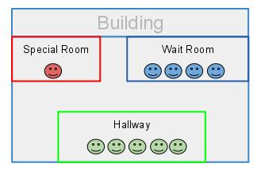
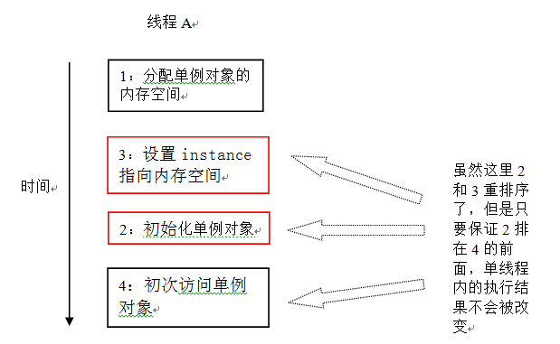
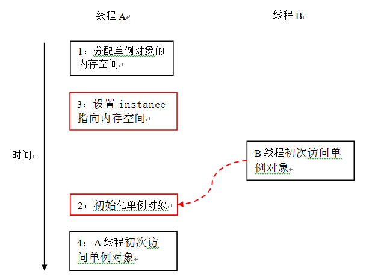
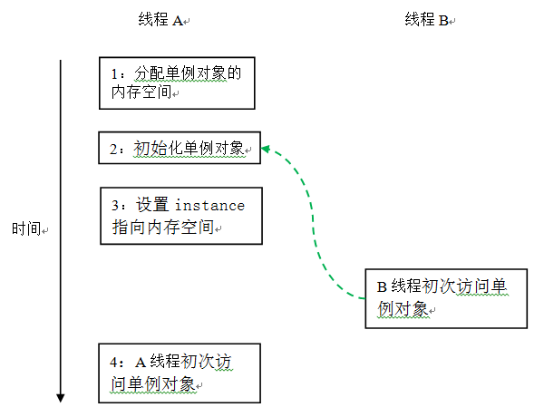
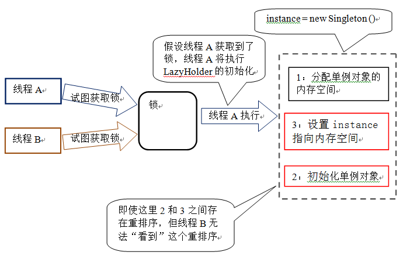

原意是易变的。在计算机领域意思相同，指由该关键字修饰的变量的值易变，因此具有可见性。可见性是指当一个线程对临界资源进行修改后，在其他线程中可以看到发生的变化。为了实现这种可见性，处理器和编译器忽略对该关键字修饰变量的优化，也就是不对它进行重排，也不会缓存。但该变量的使用却是非常危险的，因为它的行为总是违反我们的直觉。具体原因有以下几方面：
虽然编译器不去对它进行优化，并且阻止volatile变量之间的重排（如C/C++和Java）。但是，它们可能和非volatile变量一起被重排序。在C/C++和早期Java内存模型中确实是这么实现的。Java在新的内存模型下，不仅volatile变量不能彼此重排序，而且volatile周围的普通字段的也不再能够随便的重排序了（和旧模型不同），但是C/C++的volatile却并未支持。还有一点容易让人误解的是它并不具有原子性这也是最容易犯错的地方。最后一点也是最能让使用者谨慎使用的理由是某些编译器或者是陈旧的Java虚拟机对该关键字的支持不完整。也许使用volatile最安全的方式是严格限制到只是一个boolean值并且是在完全与周围变量或操作无关的场合。但不能放弃使用volatile的原因是在如今的处理器架构下，内存模型强大到处理器对volatile的操作性能和非volatile相差无几。
Linux内核中最常见的锁，作用是在多核处理器间同步数据。这里的自旋是忙等待的意思。如果一个线程（这里指的是内核线程）已经持有了一个自旋锁，而另一条线程也想要获取该锁，它就不停地循环等待，或者叫做自旋等待直到锁可用。可以想象这种锁不能被某个线程长时间持有，这会导致其他线程一直自旋，消耗处理器。所以，自旋锁使用范围很窄，只允许短期内加锁。其实还有一种方式就是让等待线程睡眠直到锁可用，这样就可以消除忙等待。很明显后者优于前者的实现，但是却不适用于此。我们来详细分析。如果我们使用第二种方式，我们要做几步操作：把该等待线程换出、等到锁可用在换入，有两次上下文切换的代价。这个代价和短时间内自旋（实现起来也简单）相比，后者更能适应实际情况的需要。还有一点需要注意，试图获取一个已经持有自旋锁的线程再去获取这个自旋锁或导致死锁，但其他操作系统并非如此。
即对互斥量进行分加锁，和自旋锁类似，唯一不同的是竞争不到锁的线程会回去睡会觉，等到锁可用再来竞争，第一个切入的线程加锁后，其他竞争失败者继续回去睡觉直到再次接到通知、竞争。互斥锁算是目前并发系统中最常用的一种锁，POSIX、C++11、Java等均支持。处理POSIX的加锁比较普通外，C++和Java的加锁方式很有意思。C++中可以使用一种AutoLock（常见于chromium等开源项目中）工作方式类似auto_ptr智能指针，在C++11中官方将其标准化为std::lock_guard和std::unique_lock。Java中使用synchronized紧跟同步代码块（也可修饰方法）的方式同步代码，非常灵活。这两种实现都巧妙的利用各自语言特性实现了非常优雅的加锁方式。当然除此之外他们也支持传统的类似于POSIX的加锁模式。
支持两种模式的锁，当采用写模式上锁时与互斥锁相同，是独占模式。但读模式上锁可以被多个读线程读取。即写时使用互斥锁，读时采用共享锁，故又叫共享-独占锁。一种常见的错误认为数据只有在写入时才需要锁，事实是即使是读操作也需要锁保护，如果不这么做的话，读写锁的读模式便毫无意义。
也叫做锁递归，就是获取一个已经获取的锁。不支持线程获取它已经获取且尚未解锁的方式叫做不可递归或不支持重入。带重入特性的锁在重入时会判断是否同一个线程，如果是，则使持锁计数器+1（0代表没有被线程获取，又或者是锁被释放）。C++11中同时支持两种锁，递归锁std::recursive_mutex和非递归std::mutex。Java的两种互斥锁实现以及读写锁实现均支持重入。POSIX使用一种叫做重入函数的方法保证函数的线程安全，锁粒度是调用而非线程。
线程在执行过程中等待锁释放，如果存在多个线程相互等待已经被加锁的资源，就会造成死锁。大多数语言的锁实现都支持重入的一个重要原因是一个函数体内加锁的代码段中经常会调用其他函数，而其他函数内部同样加了相同的锁，在不支持重入的情况下，执行线程总是要获取自己尚未释放的锁。也就是说该条线程试图获取一个自己已经获取而尚未释放的锁。死锁就此产生。还有最经典的哲学家就餐问题。
互斥锁中提到获取不到锁的线程回去睡眠等待下一次竞争锁，如果下一次仍然得不到，就继续睡眠，这种持续得不到锁的情况我们称之为饥饿。一个很有意思的例子是关于小米手机饥饿营销的。将小米手机比作竞争资源，抢手机的用户就是线程，每次开抢都抢不到的用户就是线程饥饿。和饥饿相对的是公平，操作系统调度程序负责这种公平，使用分片或nice或执行比等方式避免得不到调度的线程活活饿死。Java默认采用非公平的互斥锁（synchronized是强制的，Lock是可选的。关于Java内置锁和Lock锁的公平性讨论参见：Java中的ReentrantLock和synchronized两种锁定机制的对比），但是公平锁因为要防止饥饿需要根据线程调度策略做调整，所以性能会受到影响，而且一般情况下某条线程饿死的情况鲜有发生（因为调度本来就是不公平的），因此默认都是非公平的。
中译名比较交换。目前有一种特殊的并发方式叫做无锁并发，通过上文的说明大家应该马上清楚要使用CAS达到正确同步须由处理其提供支持。有一个叫做Lock_Free的算法提出了一种方案：确保执行它的所有线程中至少有一个能够继续往下执行。实现这个算法的技术叫做比较并交换，即CAS。CAS使用乐观技术来更新值，如果在另一条线程更新了这个值，CAS可以检测到这个错误。现在大多数处理器架构（包括IA32和Sparc）都支持比较并交换CAS的原子操作，X86下对应的是 CMPXCHG 汇编指令。CAS 原语负责将某处内存地址的值（1 个字节）与一个期望值进行比较，如果相等，则将该内存地址处的值替换为新值，CAS 操作用一行C代码描述如下： return *add == old_val ? (*add = new_val) ? false; 目前windows内置、Gcc内置、C++11定义头文件和Java通过java.util.concurrent.atomic包提供对CAS操作的支持。
对一个目标的操作并不一定通过了内存栅栏（比如只是缓存在寄存器中），其他的线程 看不到这个变化。
编译器与处理器会对内存操作的执行顺序进行调整，所以没有办法对内存操作的执行顺序 进行判断。

虽然由于可见性原因，可能会读到过期的值。但是最底安全性保证对于大多数变量读写操作
自身是原子性的。但是对于64位的非volatile变量如long或double的读写操作却允许
分解成两个对32位的读写操作。
所以对于被多线程访问的64位变量一定要加volatile修饰符。
synchronized修饰的getter setter，保证可见性与操作原子性。
volatile声明变量，保证可见性。没有锁速度快，但可见性与安全都不如锁。
volatile可以保证自己的修改对其他线程可见，但是不具备原子性，如：count++
操作不是原子性的，这种情况下要用并发包下的原子访问类。
竞争条件（Race Condition）：多个线程以不正确的顺序访问同一资源。
final保证字段访问的原子性。
同一个原子操作没有锁住同一个对象：
@NotThreadSafe
public class ListHelper<E> {
public List<E> list = Collections.synchronizedList(new ArrayList<E>());
// ...
public synchronized boolean putIfAbsent(E x) {
boolean absent = !list.contains(x);
if (absent) list.add(x);
return absent;
}
}
虽然是并发安全列表，但列表锁的是列表自己；而方法锁的是对象。
下面这样就对了，应该锁住的是同一个对象：
@ThreadSafe
public class ListHelper<E> {
public List<E> list = Collections.synchronizedList(new ArrayList<E>());
// ...
public synchronized boolean putIfAbsent(E x) {
synchronized (list) {
boolean absent = !list.contains(x);
if (absent) list.add(x);
return absent;
}
}
}
为了避免同步与锁，尽量把对象封闭在当前线程里不共享出去。常用方法有“栈封闭”和 本地线程变量。
把操作的对象封闭在一个栈里（如方法），作为一个局部变量。这样其他线程就访问不到：
public int doCount(Collection<Employee> company) {
int count = 0;
SortedSet<Employee> empSet = new TreeSet<Employee> (
new MyComparator()
);
empSet.addAll(company);
for(Employee e : empSet) {
count += e.getSalary();
}
}
上面通过内部引用empSet来操作。empSet复制了company的内容，而且它是局部变量
不会被外部线程访问到。
ThreadLocal类把内部成员封闭为仅本线程可见。静态的ThreadLocal对象可以作为
一种在当前线程里共享对象的方式。例如把数据缓存起来，让本线程里的其他模块可以
共享。
不可变对象一定是线程安全的。
final修饰符不仅表示字段不可变，类不可被继承，还表示字段的初始化过程的安全性。
所以final字段可以不受限制访问，无需要同步。
我们的User类是不可变的，因为它的字段都是final的，通过构造函数初始化：
class User {
private final String id;
private final String name;
public User(String name, String id) {
this.id = id;
this.name = name;
}
}
在因为本身是不可变的，在使用它的地方再用volatile修饰了以后就很安全，不用加锁：
public class Company {
private volatile User boss = new User('A001', 'Big Boss');
// ...
}
构造函数中使用到的内部类会得到当前对象的引用，等于已经发布出去了。所以不要在
public构造函数中使用内部类，如：新建线程并启动、创建监听器之类的。
推荐用静态的工厂方法应用到这样的场景。如：
public class SafeListener {
private final EventListener listener;
private SafeListener() {
listener = new EventListener() {
public void onEvent(Event e) {
// ...
}
};
}
public static SafeListener newInstance(EventSource source) {
SaftListener safe = new SafeListener();
source.registerListener(safe.listener);
return safe;
}
}
Eager Initialization：
Class ConnectionFactory {
private static Connection conn = new Connection();
public static Connection getInstance() {
return conn;
}
}
嫌提前消耗了资源，那用延迟初始化（lazy initialization）：
public class Singleton {
private static final Singleton instance;
private Singleton() {
}
public static synchronized Singleton getInstance() {
if (instance ==null) {
instance = new Singleton();
}
return instance;
}
}
功能上OK了，但是同步代码性能开销大。有些优化方案是有线程安全隐患的：
public class Singleton {
private static final Singleton instance;
private Singleton() {
}
public static Singleton getInstance() {
if (instance == null) { // 第一次检查
synchronized(Singleton.class) { // 加锁
if (instance ==null) { // 第二次检查
instance = new Singleton(); // 问题的根源在这里
}
}
}
return instance;
}
}
问题在于在线程执行到读取到instance不为null时，instance有可能还没有完成
初始化。instance = new Singleton();创建一个单例对象。这一行代码可以分解为如下
的三行伪代码：
memory = allocate(); // 分配单例对象的内存空间 ctorSingleton(instance); // 初始化单例对象 instance = memory; // 设置instance指向刚放分配的内存地址
java语言规范允2和3重排序，而且在一些JIT编译器上，这种重排序是真实发生的。重排序 之后的伪代码如下：
memory = allocate(); // 分配单例对象的内存空间 instance = memory; // 设置instance指向刚放分配的内存地址 ctorSingleton(instance); // 初始化单例对象
在计算机中，编译器和处理器都要遵守as-if-serial语义。as-if-serial语义的本质是保证 重排序不能改变单线程/单处理器内的程序执行结果。假设一个线程A在构造单例对象后， 立即访问这个单例对象。下面是对应的示意图：

如上图所示，只要保证4排在2的前面，即使2和3之间重排序了，也不会改变单线程内的执行 语义。这里2和3的重排序即没有改变程序的执行结果，又可以提高程序的执行性能。
下面，让我们看看多线程并发执行的时候的情况。请看下面的示意图：

虽然因为编译器和处理器都要遵守as-if-serial语义，从而能保证A线程的执行语义不会被 改变。但是当线程A和B按上图的时序执行时，B线程将看到一个还没有被初始化的对象。
回到本文的主题instance = new Singleton();如果发生重排序，另一个并发执行的
线程B就有可能在判断中返回false。线程B接下来将访问单例对象，但此时这个对象还
没有被A线程初始化！
在知晓了问题发生的根源之后，我们可以发现解决这个问题的办法由两个：
两个解决方案分别对应于上面两点。
public class Singleton {
private volatile static final Singleton instance;
private Singleton() {
}
public static Singleton getInstance() {
if (instance == null) { // 第一次检查
synchronized(Singleton.class) { // 加锁
if (instance ==null) { // 第二次检查
instance = new Singleton(); // 现在没问题了
}
}
}
return instance;
}
}
如上面示例代码所示，我们只需要把单例对象的引用设置为volatile，就可以解决问题。
从JDK5开始的JSR-133内存模型规范增强了volatile的语义：JDK5之前，允许volatile
变量与普通变量重排序；从JDK5开始，不允许volatile变量与普通变量重排序。
当声明单例对象的引用为volatile后，三行伪代码中的2和3之间的重排序，在多线程环境
中将会被禁止。上面示例代码将按如下时序执行：

事实上，这里线程A初始化单例对象，和线程B初次访问这个单例对象，这两个操作之间存在 happens-before关系。
这个解决方案本质上是通过禁止2和3中的重排序，来保证多线程正确并发执行。
JVM在类的初始化阶段（即在Class被加载后，被线程使用之前），会执行静态初始化。在 执行静态初始化期间，JVM会去获取一个锁。这个锁可以同步多个线程同时对一个类的 初始化。
基于这个特性，可以实现另一种延迟初始化单例对象的方案：
public class Singleton {
private static class LazyHolder{
public static Singleton instance = new Singleton ();
}
private Singleton() {
}
public static synchronized Singleton getInstance() {
return LazyHolder. Instance;
}
假设两个线程并发执行getInstance()，下面是示意图：

这个方案的本质是：允许2和3重排序，但不允许非构造线程（这里指线程B）看到这个 重排序。
同理也可以用私有内部类实现延迟初始化
Class ConnectionFactory {
private static class Holder {
public static Connection conn = new Connection();
}
public static Connection getInstance() {
return Holder.conn;
}
}
存入线程安全的容器（HashTable、SynchronizedMap、ConcurrentMap、Vector、
CopyOnWriteArrayList、CopyOnWriteArraySet、SynchronizedList、
SynchronizedSet、BlockingQueue、ConcurrentLinkedQueue）中，其他线程再通过
这些容器取得对象。这样的过程是安全的。
如：性别可取的值只用“男”、“女”、“未知”，计数器的值必须是正整数。
计数器当前值是17，更新操作以后的值一定是18。相反温度计当前是18度，更新以后的值 和当前温度就没有太大关系。
所以为了确保线程安全性就一定要了解对象的不可变条件与后验证条件，为了实现这种种 约束就要借助于原子性与封装性。
如果对象的成员不是线程安全类的，那就把它封闭在内里不要让外部能够访问到它。也 不要反它传递到类外部去。
把多个非线程安全的类作为字段组成一个类时，监视器模式很有用。
多个线程安全的类作为字段组成一个类，新的类不一定是线程安全的。
如果计数器Conter类只有一个成员，是AtomicLong类的currNum。那么计数器是线程
安全的，相当于把增加计数操作的线程安全性“委托”给了这个线程安全成员。
public class Counter {
private final AtomicInteger currNum = new AtomicInteger(0);
public void increase() {
this.currNum.getAndIncrement();
}
}
如果多个线程安全成员的状态是相互独立的话，并不会给新合成的类增加任何不变性条件。 所以线程安全性还是安全委托给了这多个独立的成员。
如果多个线程安全成员的状态是相互关联的话，就不是线程安全的。
如下面的代码两个字段分别代表“上限”与“下限”。所以有了新的不变性条件就是下限一定 要大于上限：
public class NumberRange {
// INVARIANT: lower <= upper
private final AtomicInteger lower = new AtomicInteger(0);
private final AtomicInteger upper = new AtomicInteger(0);
public void setLower(int i) {
// Warning -- unsafe check-then-act
if (i > upper.get())
throw new IllegalArgumentException("can't set lower to "
+ i + " > upper");
lower.set(i);
}
public void setUpper(int i) {
// Warning -- unsafe check-then-act
if (i < lower.get())
throw new IllegalArgumentException("can't set upper to " + i
+ " < lower");
upper.set(i);
}
public boolean isInRange(int i) {
return (i >= lower.get() && i <= upper.get());
}
}
所以就要有锁来控制不变性条件。
如果成员变量是线程安全的，那是否可以把这个成员共享给其他线程？这还是决定于 不变性条件。
还是以前面的计数器为例子：
public class Counter {
private final AtomicInteger currNum = new AtomicInteger(0);
public void increase() {
this.currNum.getAndIncrement();
}
}
currNum每次必须加一，这是不变性条件。如果发布到了外面其他线程可能乱改。
继承一个已经是线程安全的类：
如：给Vector添加“没有则添加”方法：
@ThreadSafe
public class BetterVecotr<E> extends Vector<E> {
public synchronized boolean putIfAbsent(E x) {
boolean absent = !this.contains(x);
if (absent)
this.add(x);
return absent;
}
}
这样线程安全上没有问题，但代码风格上有问题：把实现分开放到了两个类里。
有的时候类是final的，不可以被继承。所以只能包上工具类：
@ThreadSafe
public class ListHelper<E> {
public List<E> list = Collections.synchronizedList(new ArrayList<E>());
public synchronized boolean putIfAbsent(E x) {
synchronized (list) {
boolean absent = !list.contains(x);
if (absent)
list.add(x);
return absent;
}
}
}
这样线程安全上没有问题，但代码风格上有问题：把实现分开放到了两个类里。
不依赖其他类是否是线程安全的，全部都自己来维护线程安全性。
下面的版本接收一个非线程安全的List，虽然外部其他对这个List的操作是非线程
安全的，但通过我们这里提供了一个原子性的“没有则添加”接口。
@ThreadSafe
public class ImprovedList<T> implements List<T> {
public final List<E> list;
public ImprovedList(List<t> list) {
this.list = list;
}
public synchronized boolean putIfAbsent(T x) {
boolean absent = !list.contains(x);
if (absent)
list.add(x);
return absent;
}
}
迭代非线程安全集合会抛出ConcurrentModifyException。
即使是同步的容器，在迭代过程中也可能已经被修改。注意toString也是基于迭代的。
每次修改其实都是做了一个新的副本。